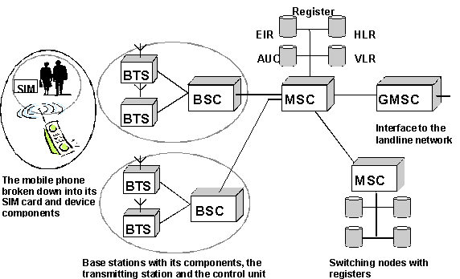
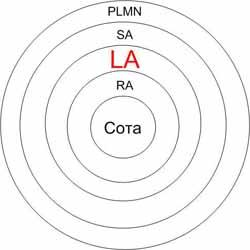
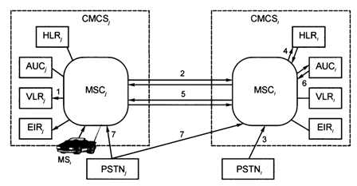

В функции управления мобильностью входят ряд процедур, основными из которых являются:
Location update;
Location area;
Роуминг,
Location update (LU) — процедура обновления информации о местоположении. Как известно, сети GSM, как и все сотовые сети, представляют собой радио сети (BSS - Base station subsystem) состоящие из отдельных базовых станций (BTS) или сот. Каждая базовая станция покрывает небольшой участок территории, который является частью определенной Зоны Местоположения (LA - location area). Благодаря совместной работе базовых станций, сотовая сеть обеспечивает единую зону покрытия на значительных территориях. Группа базовых станций, работающая совместно, называется зоной местоположения, или зоной маршрутизации.
Радиосеть мобильного оператора BSS должна хотя бы примерно представлять, где в настоящий момент находится каждый мобильный телефон (MS-mobile station), чтобы в случае необходимости не искать его по всей территории радиопокрытия. Информация о текущем местоположении предоставляется самим MS с помощью процедуры, называемойLU.
В сети GSM все LA пронумерованы, у каждой есть определенный числовой код - location area code (LAC). Текущий "адрес" телефона в сети - это пара (LAC, CellID), где CellID - это числовой идентификатор "соты". Пара (LAC, CellID) - уникальна в пределах всей сети.
Какая же из сот является "адресом" телефона. В любой момент времени телефон "слушает в эфире" до 16 широковещательных каналов (broadcast channel, BCH) от 16 сот. На основании услышанного он выбирает 6 "лучших" сот, с которыми (по мнению телефона) у него будет максимально устойчивая связь с минимальными затратами энергии. Из этих шести сот телефон выбирает одну "самую лучшую" на основании так называем "критериев C1 и C2" (не будем вдаваться в технические детали о том, что это такое). Именно эту соту телефон постарается использовать для получения или совершения звонка.
Рассмотрим, какую информацию передает при включении телефон и куда она попадает (рис.2.1).

Рис.2.1. Упрощенная структура сети GSM
После включения телефон пытается зарегистрироваться в сети. В процессе телефон формирует список 6 соседних сот, выбирает из них лучшую, и использует "общий канал доступа" (RACH) этой соты, чтобы сообщить о том, что его текущее местоположение - тут, в это самой соте. Эта информация (пара (LAC, CellID)) попадает в контроллер базовых станций (BSC), а от него - передается коммутатору (MSC), который обслуживает эту часть сети. Коммутатор сохраняет информацию о текущем местоположении телефона в специальном "кэше", называемом VLR (visitor location register). В дальнейшем телефон периодически (обычно раз в час, но зависит от настроек сети) будет выполнять "location update". Либо же, если вы куда-то идете/едете, то телефон будет выполнять "location update" при переходе в зону покрытия соты из другого LA.
Рассмотрим теперь, как используется информация LU. Допустим, нам кто-то звонит. Сеть должна передать вызов на наш телефон, т.е. на ту соту в которой телефон зарегистрировался, или же какую-то из других ближайших.
Чтобы найти эту соту, надо использовать результат последнего LU нашего телефона. Происходит это следующим образом. По номеру телефона определяется, в каком из HLR-ов находится информация о нашей SIM-карте. Далее из этого HLR-а извлекается адрес MSC/VLR-а, в зоне ответственности которого последний раз делали LU и сигнал вызова перенаправляется на этот MSC. Он извлекает из своего VLR информацию о местоположении телефона (LA и CellID), и поручает контроллеру базовых станций, который обслуживает эту LA, организовать получение звонка. Контроллер базовых станций опрашивает соты, входящие в LA, а они на частоте своего paging channel (PCCH) сообщают "мобильный такой-то, вам звонок". Дальше телефон и базовая станция договариваются о том, как именно будет принят звонок. Если же вызываемый телефон не отозвался, звонящий получает "ваш абонент находится за пределами зоны покрытия".
Кроме того, информацию, предоставляемую сети в ходе LU, можно использовать также для определения вашего географического местоположения.
При организации процедуры LU мощность излучаемая передатчиком телефона максимальная, но затем достаточно быстро понижается в ходе power control negotiation (телефон и базовая "договариваются" о минимальном уровне мощности, обеспечивающая устойчивую связь). Возникает вопрос, а если мощность большая, то не страдает ли головной мозг и прочие внутренние органы от LU? Официальная позиция: "еще неизвестно". Понятно, что мозг (если держать телефон у уха) нагревается СВЧ-излучением, но вот к чему приводит этот перегрев - тут мнения расходятся. Можно найти множество статей о том, что в этом ничего страшного нет и такое же количество статей с опровержением данного утверждения. Поэтому не рекомендуется прижимать телефон к уху и тогда однозначно вреда не будет: максимальная мощность передатчика GSM-телефона - всего 2 Вт.
Обобщая изложенное можно констатировать, что процедура обновления местоположения (LU) позволяет мобильному устройству уведомить сотовую сеть, что оно переходит из одной зоны местоположения в другую. Мобильные телефоны сами отвечают за определение кода зоны местоположения. Когда мобильное устройство считает, что код зоны местоположения изменился, оно отправляет в сеть запрос обновления зоны местоположения, содержащий информацию о предыдущем местоположении, и Временный Идентификатор Мобильной Станции (TMSI).
Есть несколько случаев, когда мобильное устройство передает в сеть запрос об обновлении зоны местоположения. Каждый раз, когда мобильный аппарат включается или отключается, в сеть передается его местоположения для регистрации или разрегистрации IMSI (международный индивидуальный номер абонента), ассоциированный с каждым пользователем мобильной связи стандарта GSM.
Кроме того, каждое мобильное устройство регулярно уведомляет сеть о своем местонахождении через определенные интервалы времени. Как только мобильный аппарат перемещается из одной зоны в другую, также производится обновление информации о местоположении. Мобильное устройство принимает решение о смене зоны местоположения, основываясь на уровне сигнала от базовых станций, выбирая наилучший. Таким образом, мобильный аппарат сохраняет гарантированный доступ к сети и может принимать вызовы, свободно перемещаясь в пределах всей зоны покрытия.
Location Area (LA) - область местоположения определяется как группа объединенных сот по географическому признаку (рис. 2.2). LA может управляться одним или несколькими BSC. Главная цель введения LA в структуру сети является то, что при входящем звонке абоненту сотовой связи его поиск и вызов должен осуществляться именно в одной конкретной LA, а не в соте. Эта процедура называется пейджинг (paging). Таким образом, когда оборудование абонента включено и зарегистрировано в сети, но нет активного соединения, то сеть знает, где находится абонент с точностью до конкретной LA. В том случае, когда абонент перемещается через границу текущей LA и попадает в другую, то он должен оповестить сеть о смене своего местоположения. Эта процедура, как известно, называется Location update. Исходя из этого, можно сделать вывод, что слишком большое число сот в LA приведет к высокой сигнальной нагрузке внутри LA из за частого пейджинга, а слишком малое число к частым Location update.

Рис.2.2. LA по отношению к другим областям местоположения в сети сотовой связи
У каждой LA есть уникальный код, по которому данная область местоположения может быть уникально идентифицирована во всем мире. Это код называется LAC (Location area code).
Роуминг в сетях GSM. Подавляющему большинству мобильных абонентов связь нужна только в их родном городе, но есть и те, кому необходимо быть на связи, уезжая в другой город, а то и в другую страну. Для таких людей и существует роуминг - возможность со своим средством мобильной связи подключиться к сети, родственной по стандарту домашней сети [1,7].
В общем случае понятие "роуминг" ("странствование") неразрывно связано с GSM. В D-AMPS и NMT, в двух наиболее распространенных стандартах персональной сотовой связи на момент начала распространения GSM, роуминг также имелся и имеется, причем не менее автоматический. Однако эти два стандарта имели (и имеют) узко региональную специализацию. NMT - это Скандинавия, Восточная Европа и государства бывшего СССР, особенно - Россия. D-AMPS наиболее распространен в Америке, и, опять-таки, в России и государствах СНГ, т.е. европейцу нечего было и мечтать, чтобы приехать, скажем, в США со своим телефоном.
Вместе с тем GSM, не успев появиться, начал стремительно распространяться по планете. К настоящему моменту сетями этого стандарта опутаны все континенты (за исключением Антарктиды), правда, в разной степени. Наибольшая плотность покрытия, как и следовало ожидать, на родине GSM - в Европе и странах СНГ. Пока слабо развиты сети в Америке, особенно - Южной, и полностью отсутствуют в Японии и Корее - там ставка сделана совсем на другие стандарты. Есть GSM даже на самом большом острове в мире Гренландии. Таким образом, подведя итог можно считать, что GSM оправдал свое название - "Global System for Mobile communications".
Для организации роуминга системы сотовой мобильной связи должны быть одного стандарта, а центры коммутации MSC мобильной связи должны быть соединены специальными каналами связи для обмена данными о местонахождении абонента (роумера).
Для обеспечения роуминга необходимо выполнение трех условий:
наличие в требуемых регионах систем сотовой мобильной связи CMCS (Cellular Mobile Communication System), совместимой со стандартом компании-оператора, у которой была приобретена MS;
наличие соответствующих организационных и экономических соглашений о роуминговом обслуживании абонентов;
наличие каналов связи между системами CMCSд и CMCSг;
обеспечивающими передачу звуковой и других видов информации для роуминговых абонентов.
Различают три вида роуминга:
ручной, то есть обмен одной MSд на другую MSг;, (или смену SIM-карты);
полуавтоматический, когда абонент MSд ставит в известность своего оператора CMCSд,;
автоматический.
Упрощенную схему организации автоматического роуминга можно представить следующим образом:
- абонент MSд сотовой системы связи CMCSд, оказавшись на территории «чужой» системы CMCSг, допускающей реализацию роуминга, инициирует вызов обычным образом, как если бы он находился на территории «своей» системы CMCS;
центр коммутации MSC; убедившись, что в его домашнем регистре HLR этот абонент не значится, воспринимает его как роумера MSд (roamer — абонент, использующий услуги роуминга) и заносит его в гостевой регистр VLR. Одновременно (или с некоторой задержкой) MSC запрашивает в домашнем регистре «родной» системы роумера, то есть в HLRд, относящиеся к нему сведения, необходимые для организации обслуживания (оговоренные подпиской виды услуг, пароли, шифры), и сообщает, в какой системе роумер MSд находится в настоящее время. Последняя информация фиксируется в домашнем регистре HLRд «родной» системы роумера. После этого роумер MS, пользуется сотовой связью как «домашней» системой;
исходящие от него вызовы обслуживаются обычным образом, с той только разницей, что относящиеся к нему сведения фиксируются не в домашнем регистре HLRд (HLR;), а в гостевом VLR;
поступающие на его номер вызовы переадресуются «домашней» системой CMCSд в систему CMCSг, где роумер MSд гостит.
По возвращении роумера MSд домой в домашнем регистре HLRд стирается адрес той системы CMCSг, где роумер находился, а в гостевом регистре VLR той системы CMCS стираются сведения о MSд.
Оплата услуг роуминга абонентом MSд производится через домашнюю систему CMCSд, а оператор CMCSд возмещает расходы компании-оператору CMCSг, оказавшему услуги роуминга, в соответствии с роуминговым соглашением.
В стандарте GSM процедура роуминга заложена как обязательный элемент. Кроме того, в стандарте GSM имеется возможность роуминга с SIM-картами с перестановкой SIM-карт между мобильными станциями различных вариантов стандарта GSM (GSM 900/1800/1900), поскольку во всех трех вариантах стандарта GSM используются унифицированные SIM-карты.
Процедура роуминга в стандарте GSM наиболее удобна для двух- и трехрежимных абонентских терминалов.
Роуминг в стандарте GSM. Для реализации роуминга мобильному абоненту сети GSM присваиваются следующие основные номера и идентификаторы [1,4,6]:
Международный идентификатор мобильного абонента — IMSI (International Mobile Subscriber Identity), который записывается в постоянное запоминающее устройство SIM-карты. IMSI включает: код страны мобильной связи MCC (Mobile Country Code) — 3 знака, код сети оператора MNC (Mobile Network Code) —2 знака, номер абонента в сети оператора MSIN (Mobile Subscriber Identity Network) — 10 знаков.
Номер сети общего пользования — соответствует телефонной нумерации каждой сети оператора мобильной связи.
Временный роуминговый номер —MSRN (Mobile Station Roaming Number).
Он выделяется при установлении входящего соединения к абоненту-роумеру на время установления соединения, но не более 30 с. Блок номеров MSRN выделяется из общей телефонной нумерации сети.
Информация о местоположении абонента MSд должна обновляться в регистре HLR, каждые несколько минут. Для этой цели информация периодически передается в базу данных HLR из базы данных VLR, MSC, узла коммутации, в котором временно находится MSд. Когда к вызываемому абоненту MSд поступает входящий вызов, регистр HLR, определяет, каким образом можно соединиться с абонентом MSд в зависимости от его текущего местоположения. По мере перемещения MS, из одной соты в другую содержимое HLR, постоянно обновляется. Такой механизм обеспечивает мобильному абоненту MSд абсолютно свободное передвижение в пределах всей сотовой сети CMCSг без риска потерять входящие вызовы.

Рис.2.3. Основные процедуры взаимодействия сетей GSM при роуминге
В соответствии с рис.2.3, процедуры взаимодействия сетей GSM при роуминге происходят следующим образом:
Пусть роумер-абонент MSд попал в визитную сеть CMCS. При этом MSд фиксируется ближайшей BTSг, идентификатор IMSI по радиоинтерфейсу через BTSг передается в MSC, и далее в регистр VLR.
Далее осуществляется процедура обновления данных местоположения MS*полученный IMSIд роумера-абонента MSд из VLR, через MSC, и по каналу связи (луч 2 — от MSC; -> MSQ) поступает в MSQ и далее в HLRд (по лучу 4).
HLRд проверяет право абонента MSд на роуминг и передает подтверждение на обновление данных (HLRд -> луч 4 -> MSCд -> луч 2 -> MSC, -> луч 1 — VLR;).
Далее следует процедура запроса/передачи абонентских данных MS/(данных об услугах, параметры аутентификации MSд)MSC; луч 2 —>MSCд —> луч 4—> HLRд или MSC; луч 2 ** MS Сд луч 6 -* AUQ.
Дополнительно осуществляются процедуры запроса/передачи временного роумингового номера MSRN: MSC, —> луч 5 —> MSQ —> луч 4 —> HLR, или MSC, —> луч 5 —> MSQ —> луч 6 —> AUQ для установления соединения.
При входящем вызове от PSTN прохождение сигнала вызова: PSTN, ^ луч 3 ^ MSQ -> луч 2 -> MSC, -> BTS, -> MSд, а далее реализуется формирование канала связи стационарного телефонного аппарата в PSTN, и MS, либо через международную сеть (луч 7), либо через национальную или международную роуминговую сеть по номеру MSRN.
Тарификация вызовов при роуминге. Организация роуминга связана не только с техническими возможностями. Прежде всего должна быть договоренность между компаниями-операторами по оплате звонков [6].
При роуминге ваш сотовый номер сохраняется, то есть тот, кто хочет позвонить вам, просто набирает номер как обычно. Для звонящего роумеру тарификация не меняется, т.е. если абонентский номер - Ташкентский, то звонок так и останется "звонком в Ташкент". А вот для абонента сотовой сети все будет по-другому. Так как имеет место перевод звонка в другую страну (другой город), то возникает международное (междугороднее) соединение, которое и оплачивается абонентом (естественно, что внутрисетевые скидки, бесплатные входящие с сотовых телефонов здесь уже не действуют). Кроме того, оператор "гостевой" сети тоже выставляет счет за свои услуги. Таким образом, стоимость роумингового звонка (неважно, входящего или исходящего) вычисляется по сложной формуле, которая в самом общем случае выглядит так:
Цена = услуги "гостевой" сети + налоги страны "гостевой" сети + операторский сбор "домашней" сети + перемаршрутизация + [налоги России]
Первые два слагаемых - это те суммы, которые выплачиваются оператору "гостевой" сети. Операторский сбор "домашней" сети - это комиссия вашего оператора за проведение расчетов, как правило, она составляет 10-15% от запрашиваемых сумм. Перемаршрутизация имеет смысл только при входящих звонках, это взимаемая "домашним" оператором плата за перенаправление звонка в "гостевую" сеть, равная стоимости международного звонка в эту страну/город.
При входящих вызовах, как правило, удерживается только стоимость перемаршрутизации, причем, как вытекает из смысла этой операции, учет ведет именно "домашний" оператор. Стоимость разговора в этом случае сразу же попадает в ваш счет, или списывается с баланса (в зависимости от способа оплаты).
Подавляющее большинство операторов GSM в мире не берут никакой дополнительной платы за входящие роумерские звонки. Однако некоторые из них за каждый входящий звонок берут дополнительную оплату. В этом случае эта сумма войдет в стоимость звонка как "услуга "гостевой" сети", вместе с удержанными с нее местными налогами и операторским сбором. Следует отметить, что размер оплаты варьируется, и иногда даже может превышать непосредственно междугороднюю составляющую - плату за перемаршрутизацию.
Исходящие вызовы, напротив, учитываются только оператором "гостевой" сети, и ваш оператор узнает о них постфактум. В настоящий момент системы обмена информацией о совершенных звонках в реальном времени не развиты, поэтому счета за роуминговые сессии поступают с некоторой периодичностью, например, раз в неделю. И возможны ситуации, когда вы уже вернулись домой, взяли детализацию (или счет), а совершенные звонки в ней пока не отражены.
Именно из-за задержки в выставлении счетов операторы принимают меры предосторожности, чтобы не допустить неприятных ситуаций. Одни применяют кредитную систему оплаты, для пользования международным роумингом (и международным доступом), т.е. нужно внести дополнительный залог. Другие, где услуги оказываются по предоплате, нужно лично явиться в офис компании с паспортом, и заполнить бланк соответствующего заявления.
В случае исходящих звонков стоимость состоит из оплаты оператору "гостевой" сети, налогов его страны и операторского сбора компании-оператора "домашней" сети. Некоторые зарубежные операторы предлагают, для экономии средств, совершать звонки через Интернет, при этом сама процедура крайне проста: вместо [+] - выход на межгород - нужно набрать короткий префикс, и затем номер как обычно. Однако общего подхода здесь пока нет, поэтому в каждом случае порядок набора, и возможность предоставления данной услуги придется выяснить индивидуально.
Короткие сообщения (SMS).Практически все существующие сети GSM поддерживают прием и передачу коротких текстовых сообщений (SMS). При этом, находясь в роуминге, никаких изменений в настройках телефона производить не нужно. Входящие сообщения бесплатны, а исходящие оплачиваются по тарифам "гостевой" сети, причем расчет идентичен исходящим звонкам. В крайне редких случаях бесплатны и исходящие СМС.
Стоимость каждого отправленного сообщения не изменится, если вы попробуете использовать другой SMS-центр, так как тарифицируется именно факт отправки.
Для того чтобы отправить SMS в другие сети, достаточно наличие роумингового соглашения вашего оператора с оператором этой сети. Причем такое соглашение не обязательно должно быть полноценным роумингом. Например, абоненты разных мобильных сетей в Германии, Великобритании, имеют возможность обмениваться SMS. Однако в отдельных странах никак об этом не договорятся, и абонентам приходиться искать обходные пути.
Перспективы развития. Роуминг, без сомнения, дает огромные перспективы для общения, где бы вы ни были. Лавинообразное развитие сетей GSM оставляет все меньше населенных мест, где нет какой-нибудь сети.
С другой стороны, есть места, где развиты сети других стандартов, а GSM нет вообще. Самый яркий пример - это Япония, Южная Америка. Для того чтобы охватить роумингом и эти страны, World GSM Association организовала GSM Global Roaming Forum, целью которого является разработка стандартов для осуществления роуминга между сетями стандарта GSM и другими сетевыми технологиями: CDMA, TDMA и iDEN. Уже есть результаты этой деятельности, недавно БиЛайн заключил роуминговое соглашение с оператором стандарта iDEN Nextel. Абоненты компании получили возможность пользоваться своим номером в Аргентине и Перу, где сетей GSM пока нет.
Другим важным вопросом является роуминг для абонентов препейд-систем (предоплата), таких как Би+ или ТАКСАфон. На самом деле, уже давно в этой сфере применяется технология "одностороннего" роуминга - возможно только принимать звонки и получать СМС (такие звонки учитываются оператором "домашней" сети). А чтобы произвести исходящий звонок, применяется не очень удобная процедура "обратного звонка": номер набирается со специальным префиксом, после подтверждающего сигнала соединение разрывается, и ожидается входящий звонок (немного напоминает использование службы автодозвона в БиЛайн или МТС). Однако уже разработана и кое-где используется система обмена информацией между операторами в реальном времени - CAMEL (Customized Applications for Mobile Networks Enhanced Logic). Такая служба, внедренная операторами Paegas в Чехии и D1 в Германии, позволяет абонентам препейд-систем пользоваться всеми преимуществами роуминга и дополнительно совершать бесплатные звонки для пополнения баланса и контроля использования средств.
В заключении отметим, что сейчас полным ходом разворачиваются сети третьего и четвертого поколений мобильной связи, разрабатываются сети пятого поколения с представлением разнообразных услуг. Поэтому можно с уверенностью утверждать, что технология автоматического роуминга, так блестяще проявившая себя в сетях GSM, будет существовать и дальше, пока не появится какая-нибудь новая, доступная глобальная мобильная сеть.